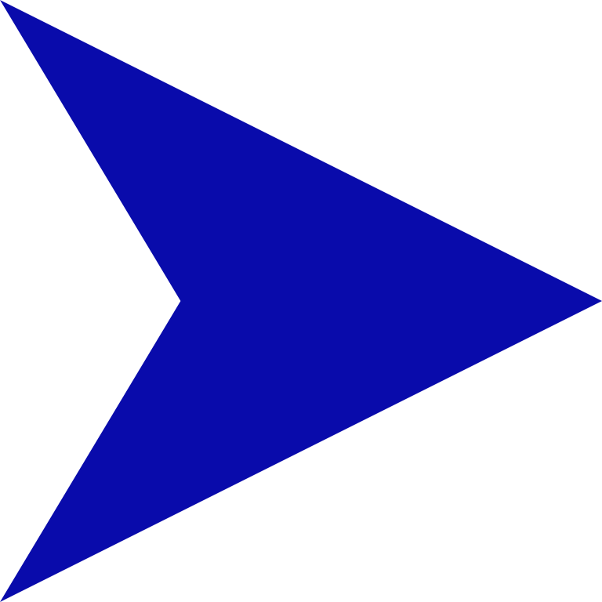

Материал из Википедии - свободной энциклопедии
Текущая версия страницы пока не проверялась опытными участниками и может значительно отличаться от версии, проверенной 6 декабря 2018; проверки требуют 19 правок.
|
Эту страницу предлагается объединить со страницей Остеохондроз позвоночника.
Пояснение причин и обсуждение — на странице Википедия:К объединению/5 июля 2013. Обсуждение длится не менее недели (подробнее). Не удаляйте шаблон до подведения итога обсуждения. |
|
В этой статье не хватает ссылок на источники информации.
Информация должна быть проверяема, иначе она может быть поставлена под сомнение и удалена. Вы можете отредактировать эту статью, добавив ссылки на авторитетные источники. Эта отметка установлена 25 января 2017 года. |
| 
Необходимо освещение с различных точек зрения.
Статью нельзя назвать рекламной, но в ней слабо представлена критика. Пожалуйста, добавьте информацию из публикаций и других источников, позволяющих осветить объект статьи с разных сторон. На странице обсуждения могут быть подробности. |
Эта статья об остеохондрозе позвоночника; о заболеваниях, объединённых общим термином osteochondrosis см. Остеохондропатия.
Остеохондро́з (от др.-греч. ὀστέον «кость» + χόνδρος «хрящ» + -ωσις «боль») — это (по данным разных авторов):
Причины [ править | править код ]
До настоящего времени нет точных данных о причинах дегенеративных заболеваний позвоночника. Существует лишь ряд теорий, рассматривающих в качестве причин развития дегенеративных поражений позвоночника различные факторы: инволютивные, дизонтогенетические, механические, иммунные, гормональные, дисметаболические, сосудистые, инфекционные, функциональные и наследственные.
Наиболее распространенной является инволютивная теория, согласно которой происходит локальное преждевременное старение хряща и кости в результате предшествовавших повреждений — механических, воспалительных и тому подобных. Согласно этой теории, развитие инволютивных дегенеративных изменений в позвоночнике предопределено генетически, а возникновение дегенерации как болезни, с соответствующими клиническими проявлениями, обусловлено влиянием различных эндогенных и экзогенных факторов. Если причину остеохондроза удается установить не всегда, то его патогенез достаточно хорошо исследован. Хотя и в данном разделе изучения остеохондроза имеются дискуссионные моменты. Дегенерация межпозвонкового диска развивается, когда катаболизм протеинов матрикса начинает преобладать над процессом их синтеза. Важнейшим пусковым моментом для этого может быть нарушение условий питания диска. Межпозвонковый диск представляет собой наиболее аваскулярную ткань в организме человека. По мере роста МПД его васкуляризация снижается, поэтому снижается и поступление питательных веществ в ткани. Это уменьшает способность клеток диска синтезировать новый матрикс, ограничивает их пролиферативный потенциал, что приводит с возрастом к снижению их плотности в диске. Результаты гистологических исследований показывают, что причина начала инволютивных и/или дегенеративных изменений межпозвонковых дисков — нарушение питания на фоне исчезновения кровеносных сосудов в замыкательных пластинках позвонков . На молекулярном уровне дегенерация диска проявляется уменьшением диффузии питательных веществ и продуктов катаболизма, снижением жизнеспособности клеток, накоплением фрагментов клеток (вследствие апоптоза) и дегенерированных макромолекул матрикса, уменьшением синтеза протеогликанов, повреждением нормального коллагенового каркаса. Данные изменения являются причиной дегидратации (из-за снижения концентрации хондроитинсульфатов). При этом пульпозное ядро теряет гидростатические свойства, то есть утрачивает способность распределять вертикальные нагрузки равномерно по всему объёму и перестаёт предохранять фиброзное кольцо от несвойственных его природе сил компрессии.
Фиброзное кольцо становится объектом постоянных механических воздействий, вследствие чего в нем развиваются патологические изменения: дезорганизация нормальной слоистой структуры в результате повреждения коллагенового матрикса, что приводит к возникновению трещин и разрывов фиброзного кольца. При развитии таких изменения межпозвонковый диск становится уязвимым для разрушающего воздействия биомеханических влияний, возникающих в условиях нагрузок и усилий человека при его нормальной активности. В результате уменьшения давления в диске напряженность волокон фиброзного кольца уменьшается, нарушаются фиксационные свойства диска, появляется патологическая подвижность в позвоночнодвигательном сегменте. Таким образом, идеология данного представления о патогенезе остеохондроза заключается в том, что патологическая подвижность выступает следствием, а вовсе не причиной дегенерации диска. Еще одним моментом в патогенезе дегенеративных изменений МПД — врастание в фиброзное кольцо межпозвонкового диска нервов и кровеносных сосудов, что является важной особенностью структурно разрушенных дисков. Врастание внутрь возникает ввиду потери гидростатического давления, которое свойственно внутренним областям неповрежденных дисков. Снижение содержания протеогликанов в дегенерированных дисках также облегчает врастание нервов и капилляров. Однако наличие сосудов и нервных волокон не могут влиять на регенераторные способности клетки, так как архитектоника, в которой они нормально функционировали, и ультраструктурные взаимодействия утрачены.
Клиническая картина [ править | править код ]
Жалобы, которые предъявляет пациент, разнятся в зависимости от формы остеохондроза: компрессионный или некомпрессионный. При компрессионных формах основными жалобами являются боль, онемение и мышечная слабость в зоне иннервируемой спинномозговым корешком; может быть скованность движений, нарушение функций тазовых органов. Выраженность болевого синдрома и неврологического дефицита зависит от степени и длительности компрессии. При некомпрессионных формах остеохондроза жалобы пациента очень вариабельны: локальный болевой синдром, рефлекторный болевой синдром, ангиодистонический синдром, висцеральный синдром и так далее. Манифестация заболевания может возникать как остро с выраженным болевым синдромом, так и прогредиентно с длительным хронизирующимся болевым синдром.
Диагностика [ править | править код ]
Установление предварительного диагноза осуществляется при первичном осмотре пациента. Осмотр обычно проводит врач-невролог в связи с жалобами больного на местные изменения, которые могут проявляться болевым синдромом, деформацией или ограничением подвижности. Позвоночник исследуют в положении больного стоя, сидя и лежа, как в покое, так и в движении. Уровень поражения позвоночника определяют путем отсчета числа позвонков от определённых анатомических ориентиров или по специальной схеме. При осмотре спины обращают внимание на осанку, особенности строения туловища, отмечают линию остистых отростков (срединная борозда спины), нижние углы лопаток, гребни подвздошных костей, боковые контуры талии и шеи, положение надплечий, отклонение межъягодичной борозды от вертикали, выявляют выпячивание остистых отростков, обращают внимание на рельеф мышц, расположенных рядом с позвоночником. Ощупывание позвоночника позволяет дополнить данные осмотра (наличие или отсутствие деформации), определить локализацию, степень и характер болезненности. При ощупывании отмечают также напряжение мышц, расположенных рядом с позвоночником, поскольку большинство травм и заболеваний позвоночника сопровождается повышением мышечного тонуса. Сгибание позвоночника используется с целью определения амплитуды движений в различных отделах позвоночника. Основную роль в исследовании позвоночника отводят рентгенографии, компьютерной томографии и магнитно-резонансной томографии , с помощью которых определяется уровень поражения, уточняется и конкретизируется диагноз, выявляются скрытые патологии. Данные диагностики позволяют лечащему врачу определить тактику лечения и выбрать наиболее эффективные методы лечения.
Лечение [ править | править код ]
Лечение остеохондроза и его осложнений проводят с помощью консервативных методов, направленных на устранение болевого синдрома , нарушений функции спинномозговых корешков и предупреждение прогресса дистрофических изменений в структурах позвоночника.
При неэффективности консервативного лечения и по специальным показаниям проводится оперативное (хирургическое) лечение, объём которого зависит от уровня поражения и клинических проявлений заболевания.
Длительность лечения остеохондроза и его осложнений в основном зависит от тяжести заболевания, возрастных изменений, применяемых методов лечения, а также добросовестного выполнения назначений и рекомендаций лечащего врача. Как показывает практика, активная фаза лечения в большинстве случаев длится 1-3 месяца при применении консервативных методов, а восстановительный период после операции — около 1 года. В начале лечения у некоторых пациентов возможно усиление болевого синдрома, связанное с реакцией мышечной системы и других образований на непривычные для организма воздействия. Болевые ощущения купируются в короткие сроки применением физиотерапевтических процедур, медикаментозных препаратов, а также специальных физических упражнений. Результат лечения во многом зависит от поведения самих пациентов, от которых требуется терпение, упорство, настойчивость, определённая сила воли, а также желание выздороветь. Наибольшую эффективность консервативной терапии и реабилитации после хирургического вмешательства можно достичь в условиях специализированных медицинских центров и санаториев, оснащённых современной диагностической и лечебной базой, а также высококвалифицированными практикующими специалистами, применяющими комплексное лечение заболеваний опорно-двигательного аппарата.
Комплексное консервативное лечение включает[источник не указан 1137 дней] в себя лечебную физкультуру, физиотерапию, массаж и медикаментозную терапию.
Лечебная физическая культура (ЛФК), кинезитерапия — основной метод консервативного лечения заболеваний опорно-двигательного аппарата. Заключается в создании дозированных нагрузок, направленных на декомпрессию нервных корешков, коррекцию и укрепление мышечного корсета, увеличение объёма и выработки определённого стереотипа движений и правильной осанки, придание связочно-мышечному аппарату необходимой гибкости, а также на профилактику осложнений. Это достигается регулярными занятиями на реабилитационном оборудовании и суставной гимнастикой. В результате выполнения упражнений улучшается кровообращение, нормализуется обмен веществ и питание межпозвонковых дисков, увеличивается межпозвонковое пространство, формируется мышечный корсет и уменьшается нагрузка на позвоночник.
Физиотерапия — метод лечения, в котором используются физические факторы: токи низкой частоты, магнитные поля, ультразвук, лазер и др. Применяется для снятия болевого синдрома, воспалительных процессов, реабилитации после травм и операций. При использовании методов физиотерапии сокращаются сроки лечения многих заболеваний, повышается эффективность применения медикаментов и снижение их дозировки, отсутствуют побочные эффекты, свойственные медикаментозному лечению.
Массаж — это совокупность приемов механического дозированного воздействия в виде трения, давления, вибрации, проводимых непосредственно на поверхности тела человека руками. Эффективно снимает мышечное напряжение, мышечные боли, улучшает кровообращение, обладает общеукрепляющим действием.
Мануальная терапия — индивидуально подобранное мануальное воздействие на костно-мышечную систему для снятия острых и хронических болей в позвоночнике и суставах, а также увеличения объёма движений и коррекции осанки.
Вытяжение (тракция) позвоночника — эффективный метод лечения болевых синдромов в позвоночнике, и суставах с использованием индивидуально подобранной нагрузки с использованием специального оборудования. Процедура направлена на увеличение межпозвонкового пространства, снятие боли и восстановление анатомически правильной формы позвоночника.
Медикаментозная терапия показана в период обострения заболевания, направлена на купирование болевого синдрома, снятие воспалительного процесса и усиление обменных процессов путём приёма или введения лекарственных средств с помощью внутримышечных или внутривенных инъекций.
Хотя каждый из выше перечисленных методов является высокоэффективным[источник не указан 1137 дней], всё-таки стойкий терапевтический эффект можно получить только при сочетании их с занятиями на реабилитационном оборудовании, то есть при создании полноценного мышечного корсета.
Хирургическое лечение - показано при наличии осложнений остеохондроза с наличием стойкой клинической картины компрессии нервных корешков или самого спинного мозга в случае неэффективности консервативной терапии. Оперативным лечением осложнений остеохондроза занимается нейрохирург.
См. также [ править | править код ]
Примечания [ править | править код ]
Ссылки [ править | править код ]
Эта страница в последний раз была отредактирована 18 февраля 2020 в 09:09.
Текст доступен по лицензии Creative Commons Attribution-ShareAlike; в отдельных случаях могут действовать дополнительные условия. Подробнее см. Условия использования.
Wikipedia® — зарегистрированный товарный знак некоммерческой организации Wikimedia Foundation, Inc.